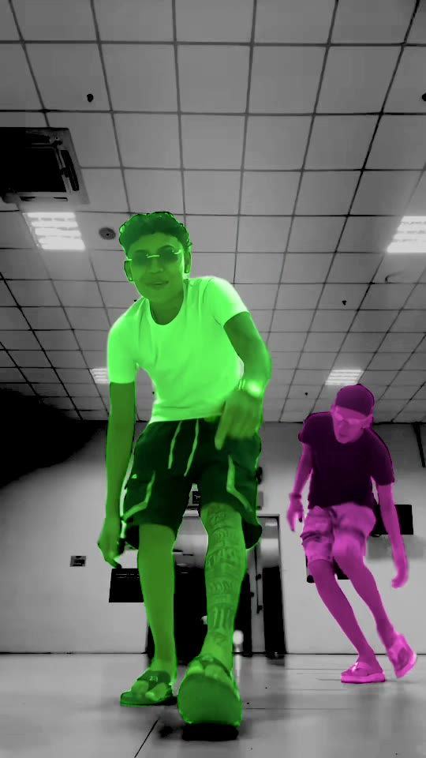
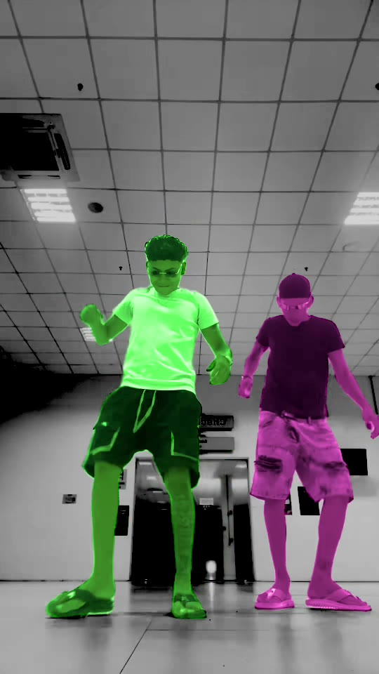
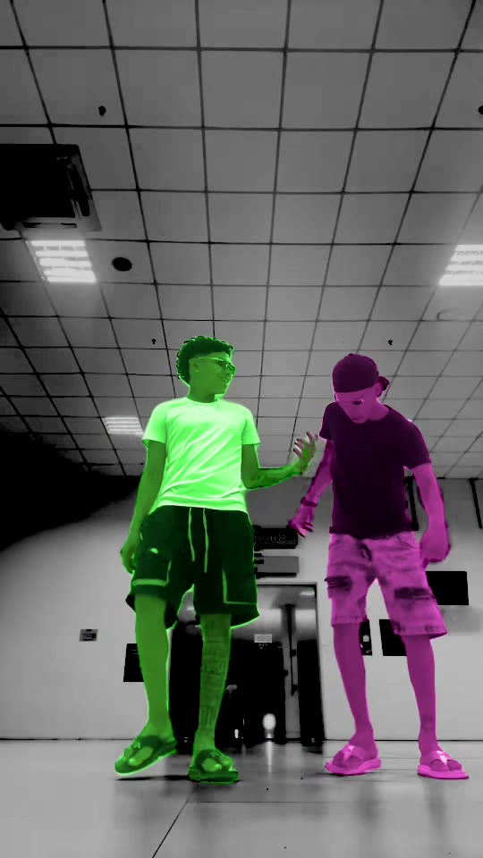
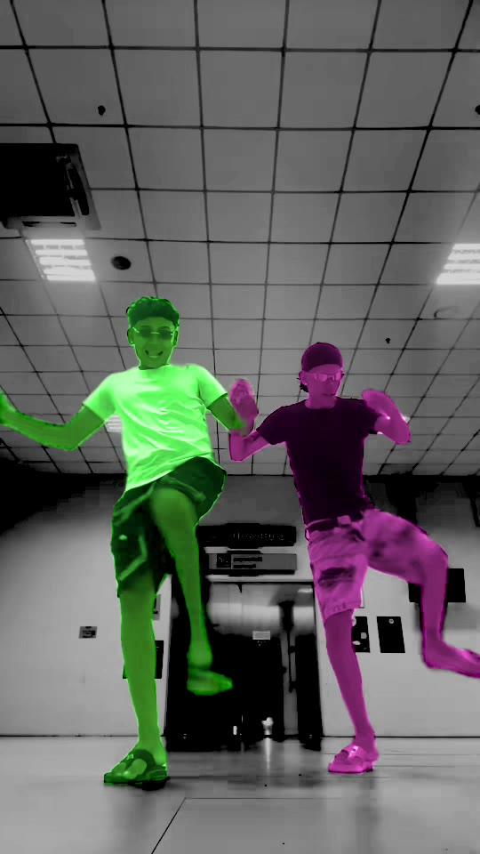
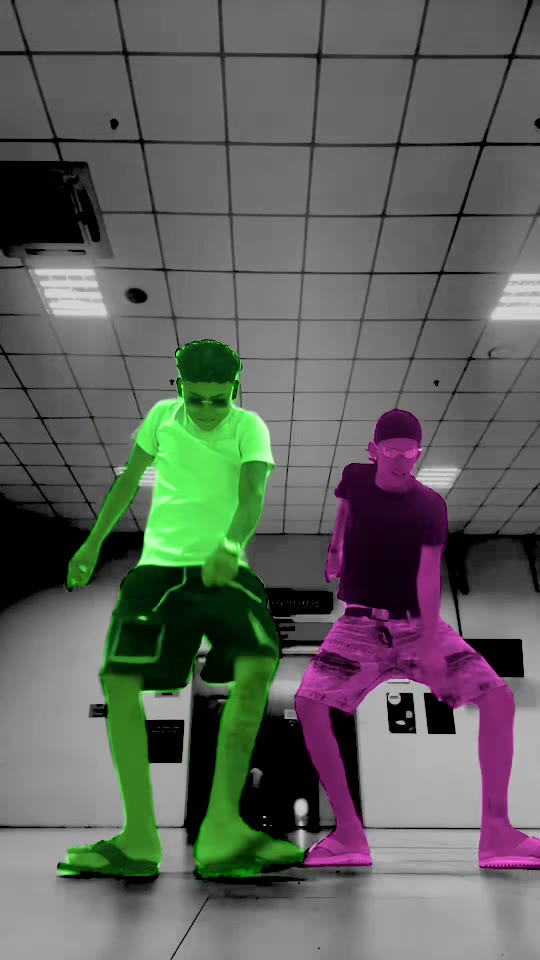

Step 2 Track
EdgeTAM, on the Neural Engine
Meta's EdgeTAM, converted to Core ML for this app and checked against the PyTorch original. It follows the person through every frame of each shot.





0.5 s2.0 s3.5 s5.0 s6.5 s
SeedThe person's first Vision mask in the shot
→
MemoryThe seed plus the 6 latest frames
→
FallbackLoses the person? Vision's masks take that shot
20–45×
faster than SAM 3.1 on the same clips, on the same Mac
0
Python, CUDA or cloud GPUs. The model downloads once, then runs offline.
Core MLNeural EngineOn your Mac · free
 Swapjutsu
Swapjutsu